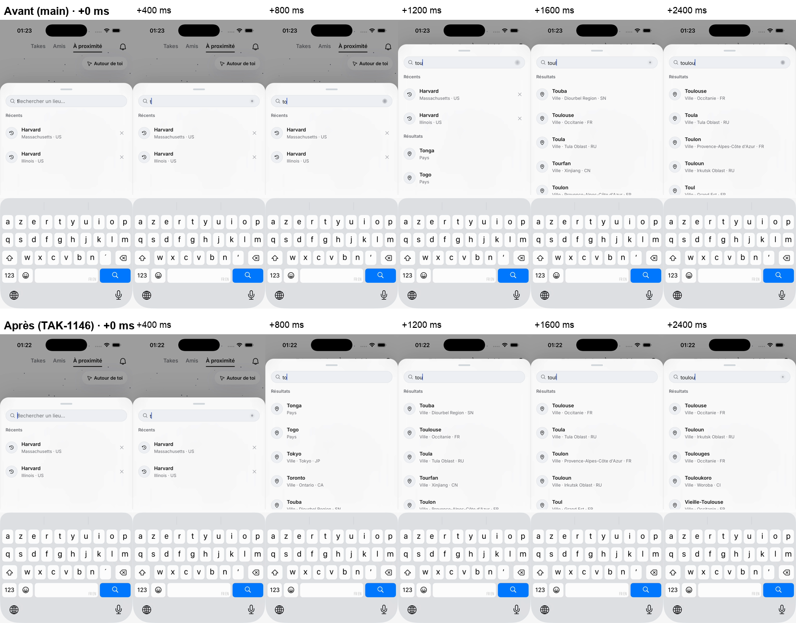

<!doctype html>
<html lang="fr">
<head>
<meta charset="utf-8">
<meta name="viewport" content="width=device-width,initial-scale=1,viewport-fit=cover">
<meta name="robots" content="noindex,nofollow">
<meta name="theme-color" content="#F3F6FB" media="(prefers-color-scheme: light)">
<meta name="theme-color" content="#0F1420" media="(prefers-color-scheme: dark)">
<title>Recherche de la carte</title>
<link rel="preconnect" href="https://fonts.googleapis.com">
<link rel="preconnect" href="https://fonts.gstatic.com" crossorigin>
<link rel="stylesheet" href="https://fonts.googleapis.com/css2?family=Nunito:wght@600;700;800;900&display=swap">
<style>
:root{
  --bg:#F3F6FB;--surface:#FFFFFF;--ink:#141B2D;--muted:#55607A;--line:#DCE3EF;--line-2:#C6D0E2;
  --ok:#21995A;--ok-ink:#16653B;--brand:#2A5BD7;
  --sans:"Nunito","Avenir Next","Segoe UI",system-ui,sans-serif;color-scheme:light;
}
@media (prefers-color-scheme:dark){:root{
  --bg:#0F1420;--surface:#18202F;--ink:#EEF2FA;--muted:#A5B0C6;--line:#2A3446;--line-2:#3A4659;
  --ok:#42BE7C;--ok-ink:#93E2B7;--brand:#7FA2F5;color-scheme:dark;
}}
*{box-sizing:border-box}
body{margin:0;background:var(--bg);color:var(--ink);font-family:var(--sans);font-size:17px;line-height:1.4;font-weight:600;-webkit-font-smoothing:antialiased}
main{max-width:760px;margin:0 auto;padding:calc(18px + env(safe-area-inset-top,0px)) 16px calc(40px + env(safe-area-inset-bottom,0px));display:flex;flex-direction:column;gap:18px}
h1{margin:0;font-size:28px;font-weight:900;letter-spacing:-.02em;line-height:1.15;text-wrap:balance}
h2{margin:8px 0 0;font-size:20px;font-weight:900}
p{margin:0;color:var(--muted);font-size:15px}
.cartes{list-style:none;margin:0;padding:0;display:flex;flex-direction:column;gap:10px}
.carte{background:var(--surface);border:2px solid var(--line);border-radius:16px;box-shadow:0 3px 0 var(--line-2);padding:12px 14px;display:flex;flex-direction:column;gap:4px}
.endroit{font-weight:900}
.chiffres{display:flex;flex-wrap:wrap;align-items:baseline;gap:6px;font-size:18px}
.avant{color:var(--muted)}
.apres{color:var(--ok-ink);font-weight:900}
@media (prefers-color-scheme:dark){.apres{color:var(--ok)}}
.gain{margin-left:auto;font-weight:900;color:var(--ok-ink)}
@media (prefers-color-scheme:dark){.gain{color:var(--ok)}}
.genre,.note{color:var(--muted);font-size:13px;font-weight:700}
</head>
<body>
<main>
<h1>Recherche de la carte : les propositions suivent chaque lettre</h1>
<p>Ton retour sur TestFlight 196 : « c pas assez fluide [...] les propositions donner quand tu ecris [...] c lent ». Mesuré le 12 octobre 2026 sur le simulateur du Mac, avec l'API de staging, en tapant une lettre toutes les 435 ms environ. L'app est relancée avant chaque essai.</p>
<h2>La première proposition</h2>
<ul class="cartes">
<li class="carte"><div class="endroit">« toulouse »</div><div class="chiffres"><span class="avant">1 334 ms</span> → <span class="apres">445 ms</span><span class="gain">−67 %</span></div></li>
<li class="carte"><div class="endroit">« lisbonne »</div><div class="chiffres"><span class="avant">1 357 ms</span> → <span class="apres">536 ms</span><span class="gain">−61 %</span></div></li>
<li class="carte"><div class="endroit">« marseille »</div><div class="chiffres"><span class="avant">1 002 ms</span> → <span class="apres">655 ms</span><span class="gain">−35 %</span></div></li>
</ul>
<h2>Pendant la frappe</h2>
<ul class="cartes">
<li class="carte"><div class="endroit">La liste se resserre sur la lettre tapée</div><div class="chiffres"><span class="avant">jamais</span> → <span class="apres">25 ms</span></div><div class="genre">Ce qui ne colle plus aux lettres tapées disparaît tout de suite.</div></li>
<li class="carte"><div class="endroit">Réponse du serveur reçue avant la lettre suivante</div><div class="chiffres"><span class="avant">1 à 2 lettres sur 9</span> → <span class="apres">6 à 8 lettres sur 9</span></div><div class="genre">Avant, chaque nouvelle lettre annulait la réponse en route.</div></li>
</ul>
<figure>
<video src="frappe-toulouse-avant-apres.mp4" autoplay muted loop playsinline controls></video>
<figcaption>« toulouse » tapé lettre par lettre, à gauche main, à droite le correctif, alignés sur la première lettre.</figcaption>
</figure>
<figure>

<figcaption>Les mêmes essais, image par image. Avec main, à « toul », la liste montre encore Touba et Tourfan. Avec le correctif, il ne reste que les lieux en « toul ».</figcaption>
</figure>
<h2>Ce que j'ai trouvé en route</h2>
<p>L'arrivée sur un lieu n'est pas lente : tout est dessiné 1,4 s après le toucher, vol compris. Les « 4-5 s » que je t'avais annoncées venaient de mon outil de mesure, pas de l'app.</p>
<p>Depuis la Corée, nos serveurs te répondent depuis Los Angeles, alors que Cloudflare lui-même te répond depuis Séoul. Chaque requête de l'app fait donc un aller-retour d'environ 140 ms de plus. Un utilisateur en France passerait sans doute par Paris.</p>
<p>Où ça en est : la PR attend sa CI et deux relectures. L'aspect de la liste ne change pas, seul son rythme change. Je ne la fusionne qu'après ton accord sur la vidéo.</p>
</main>
</body>
</html>
